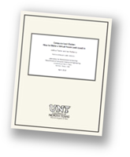

LARC Technical Reports are preliminary versions of papers to be submitted or in review in refereed journals, conferences, and workshops. They are published here for fast dissemination and citation.
2015
- Jonathon Doran and Ian Parberry, "A Server-Side Framework for the Execution of Procedurally Generated Quests in an MMORPG", Technical Report LARC-2015-01, Laboratory for Recreational Computing, Dept. of Computer Science & Engineering, University of North Texas, February 2015. [BibTeX, pdf]
- Joshua Taylor, Thomas D. Parsons, and Ian Parberry, "Comparing Player Attention on Procedurally Generated vs. Hand Crafted Sokoban Levels with an Auditory Stroop Test", Technical Report LARC-2015-02, Laboratory for Recreational Computing, Dept. of Computer Science & Engineering, University of North Texas, February 2015. [BibTeX, pdf]
- Timothy McMahan, Ian Parberry, and Thomas D. Parsons, "Evaluating Electroencephalography Engagement Indices During Video Game Play", Technical Report LARC-2015-03, Laboratory for Recreational Computing, Dept. of Computer Science & Engineering, University of North Texas, February 2015. [BibTeX, pdf]
- Thomas D. Parsons, Timothy McMahan, and Ian Parberry, "Neurogaming-based Classification of Player Experience Using Consumer-Grade Electroencephalography", Technical Report LARC-2015-04, Laboratory for Recreational Computing, Dept. of Computer Science & Engineering, University of North Texas, April 2015. [BibTeX, pdf]
- Ian Parberry, "A Designer Centric Procedural Texture Generator Using Modular Bivariate Quadratic Functions", Technical Report LARC-2015-05, Laboratory for Recreational Computing, Dept. of Computer Science & Engineering, University of North Texas, July 2015. [BibTeX, pdf, more information]
2014
- Ian Parberry, "Solving the (n2-1)-Puzzle in Real Time with 8⁄3n3 Expected Moves", Technical Report LARC-2014-01, Laboratory for Recreational Computing, Dept. of Computer Science & Engineering, University of North Texas, April 2014. [BibTeX, pdf]
- Ian Parberry, "A Memory-Efficient Method for Fast Computation of Short 15-Puzzle Solutions", Technical Report LARC-2014-02, Laboratory for Recreational Computing, Dept. of Computer Science & Engineering, University of North Texas, April 2014. [BibTeX, pdf, more information]
- Timothy McMahan, Thomas D. Parsons, and Ian Parberry, "Modality Specific Assessment of Video Game Player's Cognitive Workload Using Off-the-Shelf Electroencephalographic Technologies", Technical Report LARC-2014-03, Laboratory for Recreational Computing, Dept. of Computer Science & Engineering, University of North Texas, April 2014. [pdf]
- Ian Parberry, "Tobler's First Law of Geography, Self Similarity, and Perlin Noise: A Large Scale Analysis of Gradient Distribution in Southern Utah with Application to Procedural Terrain Generation", Technical Report LARC-2014-04, Laboratory for Recreational Computing, Dept. of Computer Science & Engineering, University of North Texas, June 2014. [BibTeX, pdf]
2013
- Dhanyu Amarasinghe and Ian Parberry, "Real-time Rendering of Melting Objects in Video Games", Technical Report LARC-2013-01, Laboratory for Recreational Computing, Dept. of Computer Science & Engineering, University of North Texas, March 2013. [pdf, more information]
- Ian Parberry, "Designer Worlds: Procedural Generation of Infinite Terrain from USGS Elevation Data", Technical Report LARC-2013-02, Laboratory for Recreational Computing, Dept. of Computer Science & Engineering, University of North Texas, August 2013. [pdf, more information]
- Ian Parberry, "Amortized Noise", Technical Report LARC-2013-03, Laboratory for Recreational Computing, Dept. of Computer Science & Engineering, University of North Texas, August 2013. [pdf, BibTeX, more information]
2012
- Dhanyu Amarasinghe and Ian Parberry, "Real-time Rendering of Burning Solid Objects in Video Games", Technical Report LARC-2012-01, Laboratory for Recreational Computing, Dept. of Computer Science & Engineering, University of North Texas, May 2012. [pdf, BibTeX, more information]
2011
- Joshua Taylor and Ian Parberry, "Procedural Generation of Sokoban Levels", Technical Report LARC-2011-01, Laboratory for Recreational Computing, Dept. of Computer Science & Engineering, University of North Texas, February 2011. [pdf, BibTeX, more information]
- Jonathan Doran and Ian Parberry, "A Prototype Quest Generator Based on a Structural Analysis of Quests from Four MMORPGs", Technical Report LARC-2011-02, Laboratory for Recreational Computing, Dept. of Computer Science & Engineering, University of North Texas, March 2011. [pdf, BibTeX, more information]
- Ian Parberry, "A Dharma of Video Game Science", Technical Report LARC-2011-03, Laboratory for Recreational Computing, Dept. of Computer Science & Engineering, University of North Texas, April 2011. [pdf, BibTeX, more information]
- Dhanyu Amarasinghe and Ian Parberry, "Fast, Believable Real-time Rendering of Burning Low-Polygon Objects in Video Games", Technical Report LARC-2011-04, Laboratory for Recreational Computing, Dept. of Computer Science & Engineering, University of North Texas, June 2011. [pdf, BibTeX, more information]
- Mary Yingst, Jennifer R. Alford, and Ian Parberry, "Very Fast Real-Time Ocean Wave Foam Rendering Using Halftoning", Technical Report LARC-2011-05, Laboratory for Recreational Computing, Dept. of Computer Science & Engineering, University of North Texas, June 2011. [pdf, BibTeX, more information]
2010
- Joshua Taylor and Ian Parberry, "Computerized Clutter: How to Make a Virtual Room Look Lived-in", Technical Report LARC-2010-01, Laboratory for Recreational Computing, Dept. of Computer Science & Engineering, University of North Texas, April 2010. [pdf, BibTeX, more information]
- Jonathon Doran and Ian Parberry, "Towards Procedural Quest Generation: A Structural Analysis of RPG Quests", Technical Report LARC-2010-02, Laboratory for Recreational Computing, Dept. of Computer Science & Engineering, University of North Texas, May 2010. [pdf, BibTeX]
- Jonathon Doran and Ian Parberry, "Emergent Economies for Role Playing Games", Technical Report LARC-2010-03, Laboratory for Recreational Computing, Dept. of Computer Science & Engineering, University of North Texas, June 2010. [pdf, BibTeX]
- Dhanyu Amarasinghe and Ian Parberry, "Towards Fast, Believable Real-time Rendering of Burning Objects in Video Games", Technical Report LARC-2010-04, Laboratory for Recreational Computing, Dept. of Computer Science & Engineering, University of North Texas, October 2010. [pdf, BibTeX, more information]